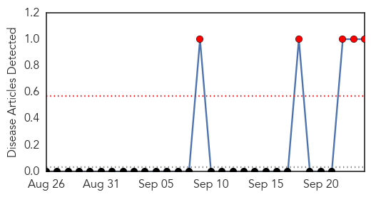
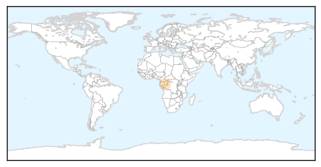
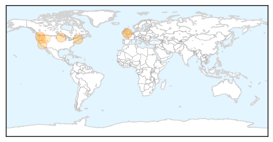

Hemmorhagic Fever
30-Day Web Trend
5 alerts, 0 warnings

30-Day Twitter Trend
0 alerts, 0 warnings

Article Locations
Article Confidences

Top Articles:
Top Tweets:
-
No tweets found for Sep 24, 2015
Meningitis
30-Day Web Trend
0 alerts, 0 warnings

30-Day Twitter Trend
0 alerts, 0 warnings

Article Locations
Article Confidences

Top Articles:
- 0.971
- Viral meningitis prompts school responses in Maine
- 0.926
- Soft Cheeses Eyed as Possible Source of Multi-State Listeria Outbreak
- 0.876
- Minnesota hit by the salmonella outbreak
- 0.787
- 7 cases of viral meningitis confirmed in Maine schools
- 0.767
- Warning issued over deadly strain of meningitis after 88% rise in cases
- 0.710
- Central Oregon counties divided on STD prevention measure; Providers can prescribe meds for patients’ sexual partners
- 0.691
- Warning issued over deadly strain of meningitis after a rise in the UK
- 0.595
- 21 Idahoans sickened in cucumber salmonella outbreak
Top Tweets:
-
No tweets found for Sep 24, 2015